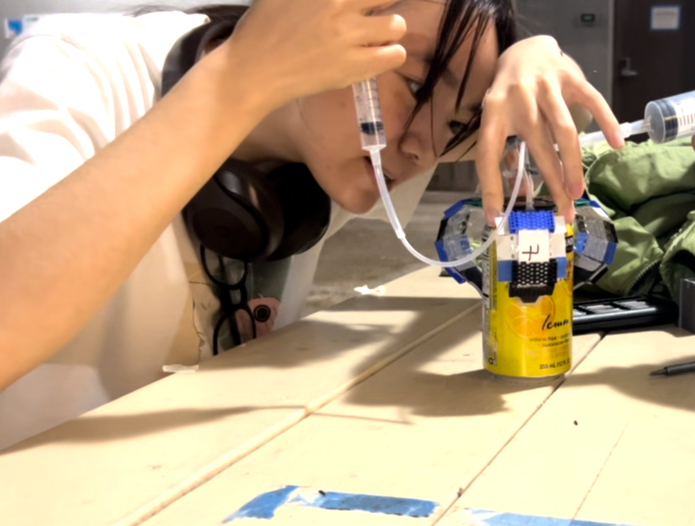
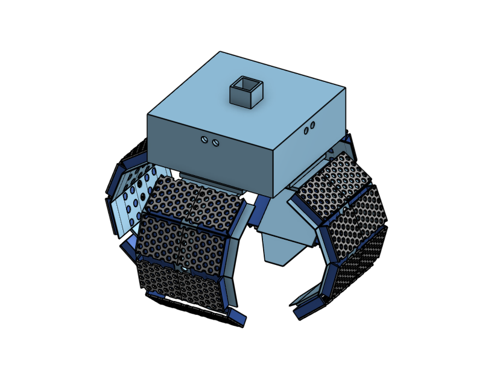
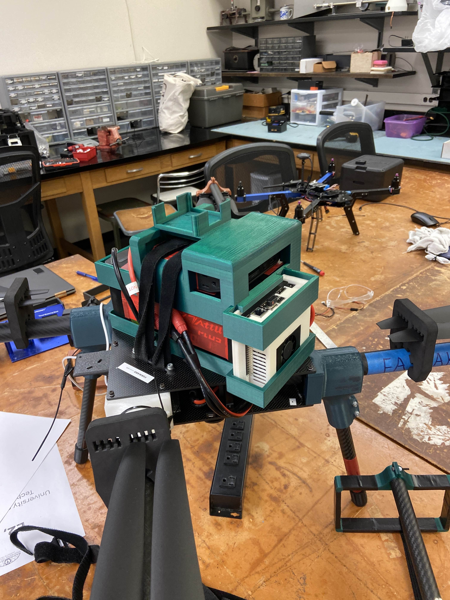

Engineering Projects
Multifunctional Jellyfish Inspired Underwater Robot
Soft robotic system for scientific observation and environmental cleanup with minimal marine life disturbance
Key Components:
- Pneumatic Soft Actuators:
- Heat-sealed PET film air channels
- pneumatic channel designs for various bending range
- material selection and CNC parameter tuning for improved durability
- Modular Assembly:
- CAD-designed PLA, resin connectors
- Integrated silicone gripping surfaces
- Equipped stiffning component for secured gripping
Tools: FDM 3D Printing, Stereolithography, Laser Cutting, CNC Writing Robot


University of Hawai'i Drone Team (UHDT)
LiDAR Mount
- Designed a modular mount system to secure the LiDAR unit, power bank, Jetson, and battery on the drone.
- Used dovetail joints to connect parts too large to fit on the 3D printer's build plate.
- Modular structure improves assembly and maintenance while keeping the design strong and lightweight.
Landing Gear
- Redesigned the landing gear to allow the UAV to fit into standard luggage for travel.
- Replaced fixed carbon fiber legs and PLA parts used in previous years, which frequently fractured during landings.
- Selected TPU for its excellent shock absorption, durability, and flexibility under dynamic loads.
- During testing, TPU was too flexible, causing the drone to wobble upon landing.
- Plan to prototype with PETG next, which offers better stiffness and impact resistance for more stable landings.



Balloon Gripper for Soft Robotic Manipulation
Lightweight, compliant gripper that gently conforms to objects using fluid-driven membrane expansion
Inflatable Chamber Design
- Uses air or fluid pressure to expand soft balloon structures for adaptive gripping
- Provides a gentle, conformal hold on objects of varying shapes and fragility
Tools: Balloons, Tubing, Custom 3D-Printed Parts, Pressure Source (Pump or Manual)
.png "Click to enlarge")